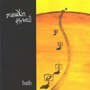

| Artist: | Maudlin Of The Well |
| Title: | Bath |
| Label: | Dark Symphonies Dark 12 |
| Length(s): | 61 minutes |
| Year(s) of release: | 2001 |
| Month of review: | [02/2002] |
| 1) | The Blue Ghost/shedding Qliphoth | 7.57 |
| 2) | They Aren't All Beautiful | 5.36 |
| 3) | Heaven And Weak | 7.42 |
| 4) | Droodle 1 | 1.38 |
| 5) | The Ferryman | 7.50 |
| 6) | Marid's Gift Of Art | 3.41 |
| 7) | Girl With A Watering Can | 8.44 |
| 8) | Birth Pains Of Astral Projection | 10.34 |
| 9) | Droodle 2 | 2.12 |
| 10) | Geography | 5.00 |
The noisy guitars open on They Aren't All Beautifiul, and the double bass drums set in. This is a totally different story with grunt vocals and an extremely fast paced piece of metal. Later the music winds down, but does not get any easier on the senses. The tormented vocalist in this part seems to have listened well to the vocalist of Neurosis (and this is a band I happen to like a lot). Musically however, Maudlin Of The Well makes more complex music than Neurosis as the following passage shows: plenty of breaks, a wayward sax presence and late Crimson guitar work. The band is more into power than melody it seems. At the end the fast paced part with the grunts returns.
Heaven And Weak opens with what seems to be acoustic bass. A combination of easy-going jazz, a string orchestra and also a sombre folky feel, the vocal part also tends to American depressed pop. The orchestration and the overall feel reminds me of bands such as Spiritualized. Towards the end the song becomes louder and noisier, with a dissonant meandering guitar. Then the song goes full turn with the advent of a circus like Metallica intermezzo. Not for long however.
The next track, and a few more laters, do not have an alphanumeric title, but a droodle of some sort. Let us call this one Droodle 1: it is short and comprises atmospheric acoustic guitar, bass and subdued keyboards.
The Ferryman opens with wonderfully rich and foreboding church organ. In addition to a heavy plodding sound it also features some wonderfully melodic female vocals. Up to now, it is the most symphonic of the tracks. Driven gothic metal with plenty of dissonance and tension. Great powerful stuff.
Marid's Gift Of Art finds us in folky waters. Nostalgic, somber folk though. The acoustic guitar and pleasant vocals sound lovely enough, but the underlying growling bass (is it?) gives the song a different atmosphere. A moody ditty then that takes us soon into Girl With A Watering Can, which opens with solo clarinet. Hazily jazzy the song continues with female vocals. A strong string orchestra presence and overall subduedness lead up to a tension building part where the guitar paves the way for something more majestic. Powerful chords, strong melodic material and angelic vocals
Birth Pains Of Astralic Projection opens moodily enough with sombre vocals and overall a rather laid back jazzy sound. Then the guitars set in with the solo version meandering about and organ supporting the sound. The vocal styles are many: grunt and death vocals, tormented ones and also whispered ones. The song works up to a powerful climax, but takes a bit gas back before it really gets there. The music goes a different direction here, moody depressing pop again. The vocal melody is a bit boring and the lyrics do not fit that well. An anti-climactic ending.
After the bouncy and splashy Droodle 2 we come to the closer of this hour of music: the laid-back acoustic Geography. The vocals are clear on this somewhat lullabyish track. Later noisy guitars set in, but the music continues to be moody for quite a while. The choruses does manage to become louder towards the end. The pace stays low.